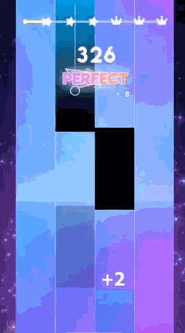
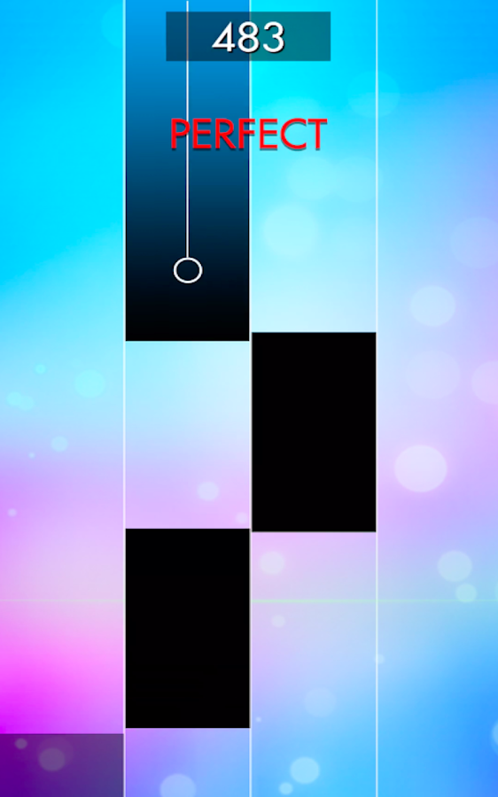
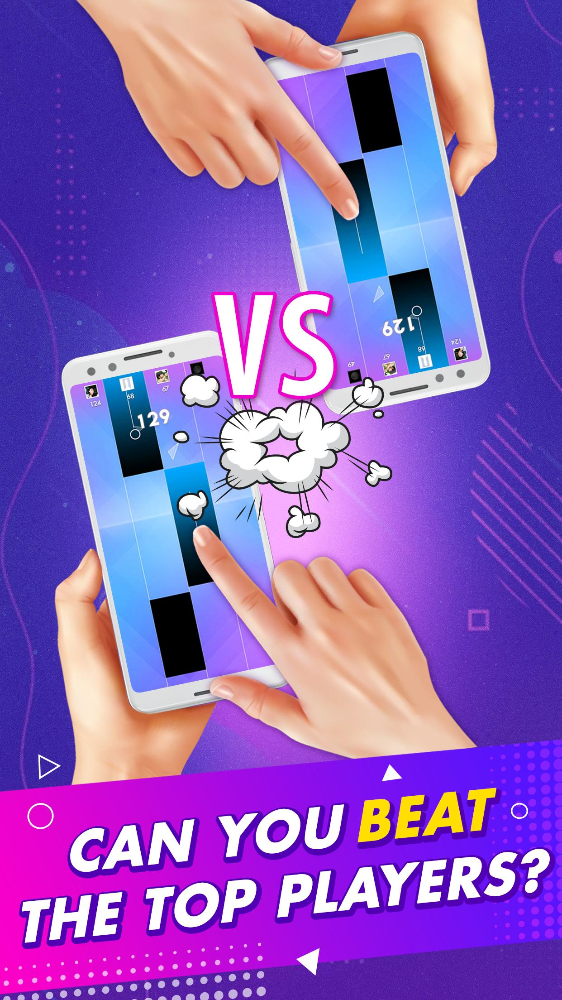

The core gameplay mechanics of Magic Tiles 3 similar to Beatstar mainly revolve around
interacting with the tiles on the screen to play music and keep to the beat. However, there will
be a few changes. Here are some key points of the gameplay mechanism that I found when
experiencing the game Magic Tiles 3:
The game will still require players to press and hold the correct Time. Players need to
tap on the music tiles as they move across the screen on 4 rows instead of 3 like in
Beatstar. Pressing needs to be done at the right time to create perfect notes.
Instead of having to unlock music like in Beatstar, players in Magic Tiles 3 can
play any music they want. Songs can be unlocked through watching ads and winning
a song with a perfect score (achieving 3 crowns). In addition, players can play
the entire song for free if they are VIP members (I know this because I only get
1 day of free VIP, I'm broke). Players can choose their favorite music and try
to conquer the song with 3 crowns.
Player level will directly affect the score. Players receive points based on
pressing at the right time and keeping in rhythm. Correct performance and not
letting the music tiles fall will determine their score. If the player lets the
brick pass, the player needs to watch an ad to be able to use one of the limited
6 lives. For VIP players, there will be no need to watch ads.
The difficulty of the game will gradually increase the longer the player plays.
In my experience, at the first 3 stars, the speed will be like holding hands and
walking with a beautiful girl. In the next 2 crowns, you are transported to a
large displacement racetrack. At the final crown, the speed will be like you
meet a deadline with a week's worth of work within 1 hour. Luckily I didn't see
"rap god" on the playlist.
The new mechanism that makes Magic Tiles 3 different from Beatstar is probably
competitiveness. Creating a competitive environment between players through
quick team matches (4 people) or competing with friends really fascinated me. By
taking advantage of the game's competitive instinct, I was psychologically
controlled and wanted to fight again and again until I won a new match.

2. Explain and compare how music is integrated with the gameplay of the game.
Magic Tiles 3's way of integrating music into the game is similar to Beatstar. Here is my
opinion on how this game integrates music:

Magic Tiles 3 has chosen music methodically and paid attention to users' tastes.
Through observing the list of songs in the playlist, I realized that the game
provided many popular and diverse music from many different genres. These tracks
are chosen because they bring familiarity or have attractive melodies that
motivate the player. The difference between Magic Tiles 3 and Beatstar is
probably the appearance of Vietnamese music. The presence of "Ghe Yeu Dau" and
"Viet Kieu" also shows the publisher's interest in domestic users. In addition,
the above work also increases the diversity in music selection for users.
Magic Tiles 3 has a way of dividing music into music tiles similar to Beatstar.
Each track is divided into music tiles that move across the screen according to
a certain rule. In my experience, each tile corresponds to a note, a small part
of the music, or a word that the singer sings in the song.
Magic Tiles 3 Moves music tiles according to the beat of the song similar to the
Beatstar game. Moving the music brick across the screen is synchronized with the
rhythm of the music. Players need to tap or hold on the boxes containing the
music tiles at the right time to create the correct sound and keep in tune with
the beat. The creativity that makes Magic Tiles 3 different from Beatstar is
pressing and moving along the zigzag lines, the zigzag lines appear when the
song falls into the singer's long humming (according to my experience).

3. What is the motivation that keeps players playing & coming back in these games? Explain
how the game creates that motivation with its systems & design.
This is the 2nd game I have tried. Based on personal experience, I have drawn the following
conclusions about what motivates players to continue playing the game:
First motivation (click
me)
Second motivation (click
me)
Third motivation (click
me)
Fourth motivation (click
me)
Fifth motivation (click
me)
4. Describe the style and aesthetic of the game. Explain how the game achieves that aesthetic
through its design, art, and audio.
As for style, the Magic Tiles 3 gameplay screen also has a simple and minimalist design style,
focusing mainly on music tiles moving on the screen similar to Beatstar. The user interface is
designed to make the game intuitive and easy to use. In terms of aesthetics, music tiles, and
motion effects create a colorful and lively screen. The player's vision is stimulated through
the blend of music tiles, paths, and outstanding effects.
Players need to tap on the boxes to press exactly to the beat and hold in time with the music.
Accuracy and synchronization with the beat are how players immerse themselves in the music and
complete the song. The sound of musical notes is combined with the smooth movement of music
tiles, creating a harmonious musical and visual experience. Sound effects combined with images
enhance the player's aesthetic experience.
5. Propose briefly 1 critical point you want to improve.
Briefly: Sometimes the game lags and needs to be improved.
Details: Magic Tile 3 is a game that requires high observation, reflexes, and
speed. Lag can cause a bad user experience. During testing, with the test device being the
iPhone The above situation should be optimized in case people who love and are serious about the
game (loyal fans) turn away from the game.